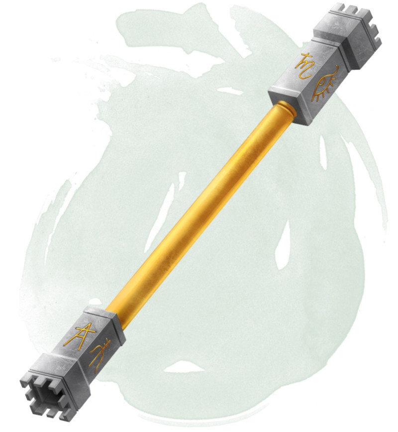

Sceptre d'absorption
Sceptre, très rare (nécessite un lien)
Lorsque vous tenez ce sceptre, vous pouvez utiliser votre réaction pour absorber un sort qui vous cible exclusivement, et sans zone d'effet. L'effet du sort absorbé est annulé, et son énergie (mais pas le sort en lui-même) est stockée dans le sceptre. L'énergie a le niveau du sort qui a été lancé. Le sceptre peut absorber jusqu'à 50 niveaux d'énergie au cours de sa vie. Lorsqu'il atteint ces 50 niveaux, il ne peut plus absorber d'énergie. Si vous êtes visé par un sort et que le sceptre ne peut plus absorber, le sceptre n'a aucun effet sur le sort.
Lorsque vous vous liez avec le sceptre, vous savez combien de niveaux il a déjà absorbé au cours de son existence, et combien de niveaux d'énergie il contient actuellement.
Si vous êtes un lanceur de sorts et que vous tenez le sceptre, vous pouvez convertir l'énergie stockée en emplacements de sorts pour lancer des sorts préparés ou connus. Vous pouvez créer des emplacements de sorts d'un niveau égal ou inférieur à vos propres emplacements, jusqu'à un niveau maximum de 5. Vous utilisez les niveaux stockés à la place de vos emplacements, mais sinon le sort est lancé normalement. Par exemple, vous pouvez utiliser 3 niveaux stockés dans le sceptre comme un emplacement de sort de niveau 3.
Un sceptre trouvé contient 1d10 niveaux d'énergie stockés. Un sceptre qui ne peut plus absorber d'énergie et qui n'a plus d'énergie stockés devient non magique.
Lorsque vous vous liez avec le sceptre, vous savez combien de niveaux il a déjà absorbé au cours de son existence, et combien de niveaux d'énergie il contient actuellement.
Si vous êtes un lanceur de sorts et que vous tenez le sceptre, vous pouvez convertir l'énergie stockée en emplacements de sorts pour lancer des sorts préparés ou connus. Vous pouvez créer des emplacements de sorts d'un niveau égal ou inférieur à vos propres emplacements, jusqu'à un niveau maximum de 5. Vous utilisez les niveaux stockés à la place de vos emplacements, mais sinon le sort est lancé normalement. Par exemple, vous pouvez utiliser 3 niveaux stockés dans le sceptre comme un emplacement de sort de niveau 3.
Un sceptre trouvé contient 1d10 niveaux d'énergie stockés. Un sceptre qui ne peut plus absorber d'énergie et qui n'a plus d'énergie stockés devient non magique.
Dungeon Master´s Guide (SRD)
